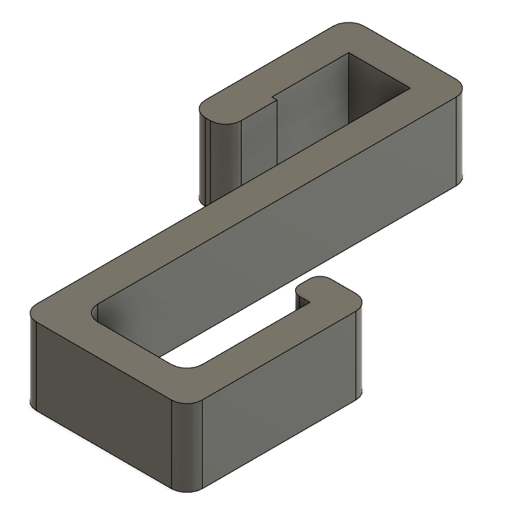

Locker Hanger

Model Description
In my junior year of high school, I had a very inconveniently-located locker, so me and three other people decided to share a locker that was more convenient for all of us.
There was a bit of an oversight, however: there was not enough space to account for all four of us. We managed to fit all our books in there with various locker shelves, but not enough to store our winter jackets and lunches.
Hence the creation of this model - a hook to hang on the locker door to hang them! Since our school keeps all their lockers open, we would have easy access to the hangers and get to class quickly whenever any of us arrived late.
Its tilt also let us hang more jackets onto one hook.
3D Printer Settings
Maximum length: 4.1 in
Maximum width: 2.52 in
Maximum thickness: .75in
Single print. Intended to fit on a 220x220x220mm base plate.
Here were my 3D printer settings:
3D printer: Creality Ender 3 Pro
Slicer: Ultimaker Cura
Filament type: PLA
Layer Height: .2mm
Wall/Top/Bottom Thickness: .8mm
Infill: 20%
Printing Temp: 200 degrees C
Base Plate Temp: 60 degrees C